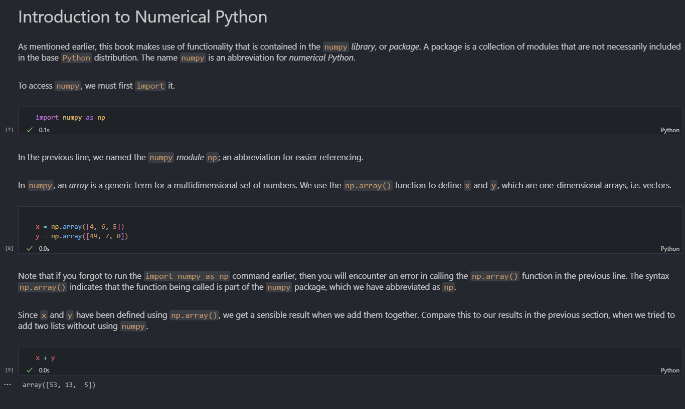
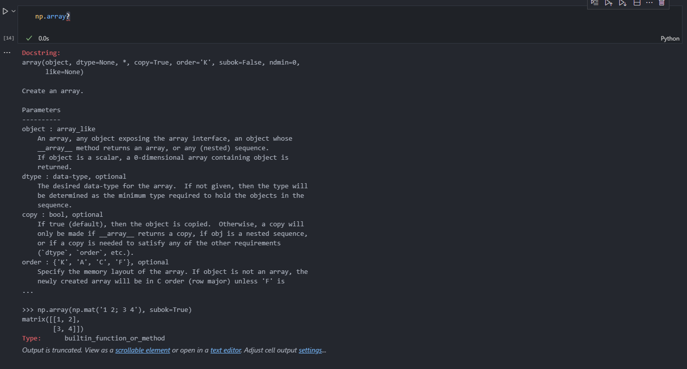
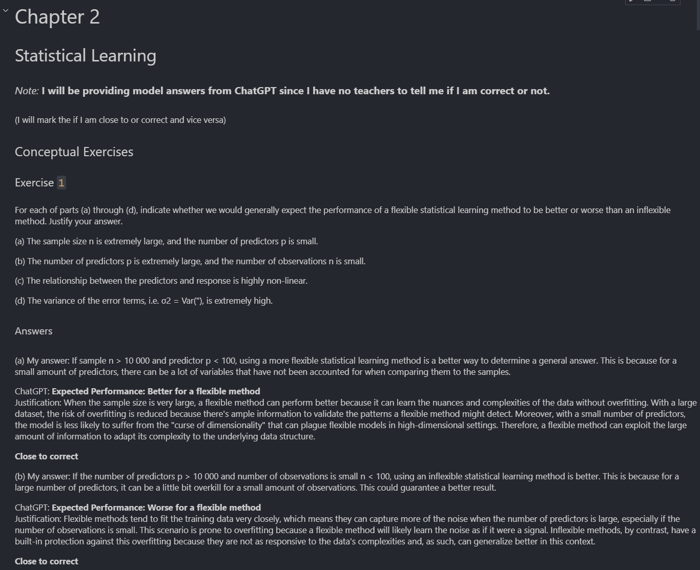

An Introduction to Statistical learning - Collaboration study book
I was introduced to this book via this YouTube video . I was working on Helsinki University MOOC-course "Data Analysis with Python", which I will work on along side this book. I found this book by sheer coincidence
This book was created by 5 different professors from 3 different universities in the USA. Most notably 3 professors from Stamford University, Prof. Trevor Hastie, Prof. Rob Tibshirani and Prof. Jonathan Taylor all of whom are professors of Statistics. Other co-authors are Prof. Gareth James of Emory University, Goizueta Business School and Prof. Daniela Witten of the University of Washington also professor of Statistics.
.png)
Description
Quote from the website:
"As the scale and scope of data collection continue to
increase across virtually all fields, statistical learning
has become a critical toolkit for anyone who wishes to understand
data. An Introduction to Statistical Learning provides a broad and
less technical treatment of key topics in statistical learning. This
book is appropriate for anyone who wishes to use contemporary tools
for data analysis.
The first edition of this book, with applications in R (ISLR), was
released in 2013. A 2nd Edition of ISLR was published in 2021. It
has been translated into Chinese, Italian, Japanese, Korean,
Mongolian, Russian, and Vietnamese. The Python edition (ISLP) was published in 2023.
Progress
Here is a timeline of my current progress:
Chapter 1 - Introduction
To get started with anything to do with data analysis, ML and AI, you need to download and install Python and Anaconda navigator. This is the hub that manages everything to do with Data. Then the next step is to download and install the ISLP learning package from this link.
The first chapter is an introduction chapter to the book. It goes over the basics and the history of statitical learning. It also has a chapter for people who the book is towards. This includes: Data scientists, engineers, data analysts and quants along side of other non-quantitative fields such as social sciences and business. The book is very theoretical and uses a lot of mathematical formulas. The structure of formulas and matrices is depicled and documented in this chapter as well.
Chapter 2 - Statistical Learning
This chapter goes over what statistical learing is, why it is used and how it is used as well as what difference is between supervised and unsupervised learning. In this chapter we are also introduced to the first terms and equations that are used in the book. The most prominent equation introduced in this chapter is KNN (K-nearest neighbours). KNN classifies the new data points based on the similarity measure of the earlier stored data points.
This chapter is also the first chapter that has a Lab section. In these Lab sessions we go over the most prominent libraries and packages that are used in Python. This includes: Pandas, Numpy, Seaborne and Matplotlib. These libraries are considered the most important Python libraries for data analysis, data visualization and even in AI and ML. The labs use a Jupyter notebook as the base and I intend to use Jupyter notebook as well for the exercises.
Chapter 3 - Linear Regression
This chapter is about linear regression, a very simple approach for supervised learning. In particular, linear regression is a useful tool for predicting a quantitative response. The chapter then also goes over some of the equations to use for linear regression and the two different types of linear regression: Simple- and Multiple linear regression. Two of the more important equations from this chapter are the Residual Standard Error (RSE) and the R-squared statistic. Also an applicaiton of KNN (chapter 2) and Linear Regression is shown in this chapter.
Chapter 4 - Classification
Chapter 5 - Resampling Methods
Chapter 6 - Linear Model Selection and Regularization
Chapter 7 - Moving beyond Linearity
Chapter 8 - Tree-Based Learning
Chapter 9 - Support Vector Machines
Chapter 10 - Deep Learning
Chapter 11 - Survival Analysis And Censored Data
Chapter 12 - Unsupervised Learning
Chapter 13 - Multiple Testing
Sample of a Jupyter Lab exercise:
In the ISPL learning package there is also a function call that allows for students to learn what a certain function does. This is called via library.function? (e.g. numpy.array?) like so:
Sample exercises and images/solutions
I decided to make a Jupyter Notebook for every chapters exercises as well as a better way to keep track of everything. Here is an example of what it look:
In the exercises section there are Conceptual and Applied exercises. The conceptual exercises are theoretical with the answers found in the book and the applied exercises are practical exercises that use Python and the provided data sets to solve the exercises. Here is an example:

Conclusion
Some conclusion will be provided once I finish the project.